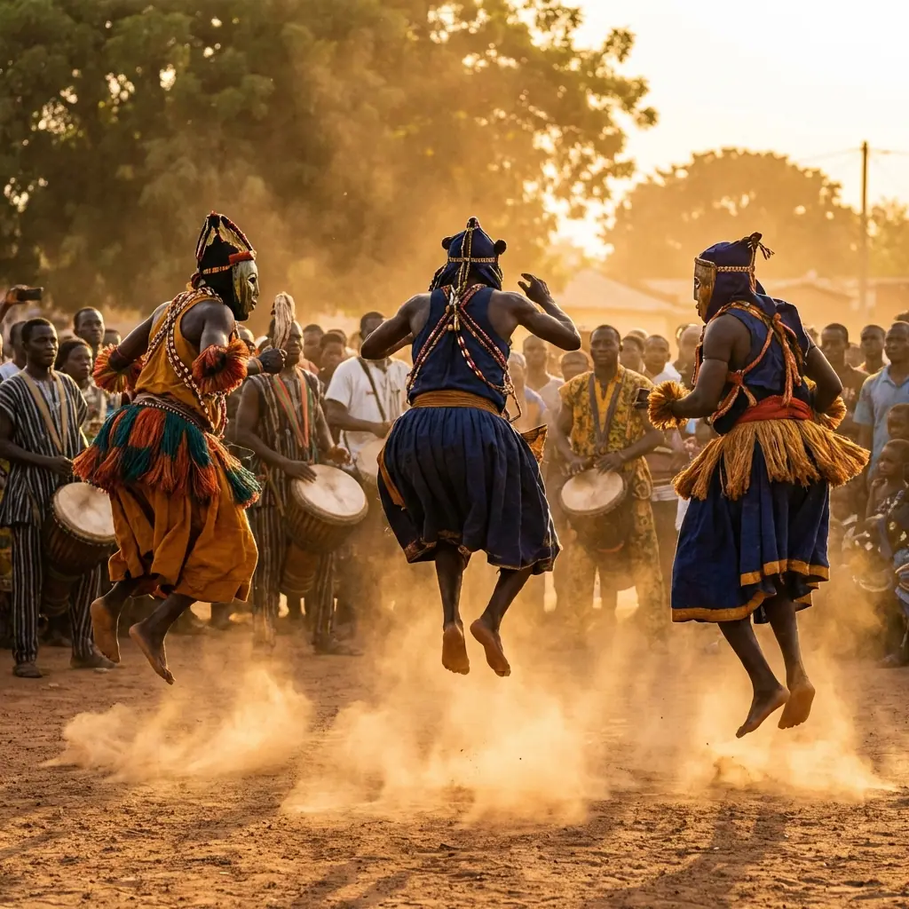
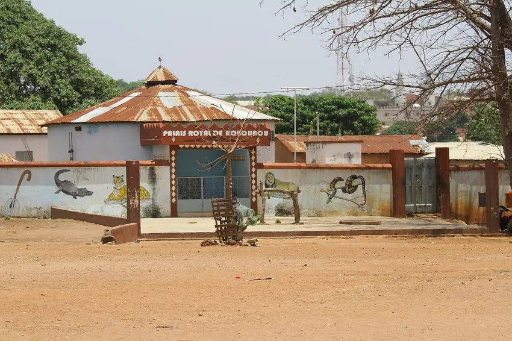

L’ÉNERGIE CRÉATIVE
DE PARAKOU
Parakou, une ville où les cultures se rencontrent, se transmettent et s’expriment. Au cœur du Borgou, Parakou porte une histoire façonnée par les rencontres entre les peuples et les générations. Son identité culturelle se découvre dans les traditions, les langues, les pratiques sociales, les expressions artistiques et les savoir-faire qui rythment la vie de ses habitants. Des héritages baatonu aux différentes influences culturelles qui composent la ville, chaque expression raconte une partie de son histoire.
Explorez une culture vivante, portée par ses communautés, enrichie par ses rencontres et continuellement renouvelée par la créativité de ses habitants.
Plusieurs héritages, une même ville
Parakou est une ville de rencontres. Son histoire est notamment liée à la tradition royale baatonu et à la formation du royaume de Kobourou. Au fil du temps, les déplacements de populations et les échanges commerciaux ont contribué à faire de la ville un espace de diversité culturelle.
Baatombu, Fon, Yoruba, Dendi, Peulh et d’autres communautés participent à cette richesse humaine et culturelle. Leurs langues, leurs habitudes, leurs pratiques et leurs expressions contribuent à façonner le quotidien de la cité.
Cette diversité se manifeste dans les cérémonies familiales, les modes vestimentaires, les habitudes culinaires, les danses et les formes de sociabilité.
À Parakou, l’héritage culturel ne se résume pas à une mémoire ancienne. Il continue de vivre à travers les familles, les communautés et les nouvelles générations qui le transmettent et le font évoluer.

Palais Royal de Kobourou
Symbole séculaire de l'autorité royale et de la tradition BaatonuLa culture prend forme, rythme et mouvement
Les expressions culturelles donnent une présence aux traditions. Elles racontent les histoires des communautés, accompagnent les moments importants de la vie sociale et transmettent des connaissances d’une génération à l’autre. À Parakou, elles se manifestent notamment à travers la danse, la musique, les pratiques artisanales et les traditions sociales.
Danses et expressions corporelles
Dans l’aire culturelle baatonu, la danse Tèkè est une expression festive qui accompagne différents moments de réjouissance. Elle peut notamment être exécutée lors de retrouvailles et de cérémonies liées à la tradition royale.
À travers les mouvements, les rythmes et les rassemblements, la danse devient un langage collectif. Elle exprime la joie, renforce les liens communautaires et participe à la transmission des références culturelles.
Musique et expressions sonores
La musique occupe une place importante dans les expressions culturelles béninoises. Les instruments, les rythmes et les chants accompagnent les célébrations, les rassemblements et différentes formes de création artistique.
À Parakou, la présence d’un espace consacré à la conservation des instruments et des rythmes traditionnels témoigne de l’intérêt porté à cette mémoire musicale. La musique est à la fois un héritage à préserver et un moyen d’expression qui continue d’inspirer les artistes.
Artisanat et création
Le travail des matières constitue une autre dimension du patrimoine culturel. Textile, poterie, bois, calebasses et objets utilitaires témoignent de savoir-faire développés et transmis au fil du temps.
Ces réalisations associent maîtrise technique, connaissance des matières et sens de la création. Elles racontent les usages, les habitudes et les références culturelles des communautés.
Traditions et pratiques sociales
Les cérémonies familiales et communautaires occupent une place importante dans la transmission culturelle. Mariages, funérailles, rites de passage et rassemblements sont autant de moments où les pratiques, les chants, les gestes et les valeurs communautaires peuvent s’exprimer.
Ces manifestations varient selon les familles, les communautés et les traditions concernées. Elles constituent des moments de transmission et de renforcement des liens sociaux.
Le patrimoine se découvre aussi à travers les saveurs
Une ville se découvre également par ce qu’elle prépare, transforme et partage. À Parakou, les habitudes alimentaires témoignent de la diversité des produits et des savoir-faire culinaires présents dans le nord du Bénin. Certaines préparations occupent une place particulière dans les habitudes locales et méritent d’être découvertes.
Sokuru
L’igname piléePréparé à partir d’ignames bouillies puis pilées, le Sokuru est un mets apprécié dans les habitudes culinaires de Parakou. Sa préparation demande un travail physique et un savoir-faire qui se transmettent notamment dans les familles et les espaces de restauration.
Incontournable du BorgouDibu
La pâte traditionnelleLe Dibu fait partie des préparations locales présentées parmi les spécialités culinaires de Parakou. Il témoigne de la diversité des transformations de céréales et d’autres produits alimentaires dans les habitudes culinaires de la région.
Céréales & Savoir-faireMɔɔbu
L’akassa localL’akassa, désignée localement sous le nom de Mɔɔbu dans la présentation touristique de Parakou, fait partie des préparations à découvrir pour mieux comprendre les habitudes alimentaires de la ville.
Spécialité typiqueKoko
La bouillie réconfortanteServie notamment au petit-déjeuner ou lors de pauses gourmandes, la bouillie fait partie des préparations courantes de la cuisine locale. Sa diversité repose sur les céréales utilisées et les habitudes de préparation.
Douceur matinaleWasa-wasa
Semoule de cossettes d'ignamePréparation à base de cossettes d’igname transformées en semoule, le Wasa-wasa est une spécialité connue dans plusieurs localités du nord du Bénin. Il illustre les différentes manières de transformer et de valoriser les ressources alimentaires locales.
Emblème du SeptentrionDes espaces pour découvrir, apprendre et créer
La culture a besoin de lieux pour être conservée, transmise et partagée. À Parakou, plusieurs espaces participent à la découverte du patrimoine, à la formation artistique, à la diffusion culturelle et à l’accès à la connaissance.

Musée de plein air et ethnographique
Un lieu pour remonter le fil des savoir-faire et des modes de vieLe Musée de plein air et ethnographique de Parakou présente des éléments du patrimoine matériel et des architectures traditionnelles du Borgou. Ses collections comprennent notamment des poteries, des textiles, des calebasses gravées, des instruments de musique, des sculptures en bois ainsi que des objets liés à la vie domestique, à l’agriculture, à la forge et au tissage. À travers ces objets et ces collections, le musée permet de découvrir les techniques, les usages et les connaissances qui ont marqué la vie des communautés.
Explorer la fiche du muséeMusée de la musique – IRSBAC-COM
La mémoire culturelle possède aussi ses propres sonoritésAssocié à l’Institut régional supérieur des beaux-arts, de la culture et de la communication (IRSBAC-COM), cet espace unique est consacré à la conservation des instruments et des rythmes traditionnels du Bénin. Il permet d’approcher la richesse des expressions musicales et de rappeler le rôle fondamental des instruments dans la transmission du patrimoine immatériel.
Conservation & Rythmes traditionnelsEspace culturel Windekpe
Un espace dédié à la formation et à la création artistiqueSitué dans le quartier Nima, l’espace culturel et artistique Windekpe est un centre de formation et de diffusion artistique majeur dans le septentrion béninois. Il favorise les rencontres, les échanges, la formation de la jeunesse, la création de spectacles et leur diffusion. Il accueille également des initiatives consacrées à la valorisation du patrimoine vestimentaire et textile.
Formation & Spectacles vivantsCentre socio-culturel Okouabo
Faire de la lecture et de la créativité des outils d’ouvertureInstallé dans le quartier Albarika, le Centre socio-culturel Okouabo est un projet éducatif destiné notamment aux enfants et aux adolescents de Parakou. Son action s’articule autour de l’accès aux livres, de l’éveil intellectuel, de l’ouverture sur le monde et d’ateliers ludiques et créatifs. Il participe activement à la démocratisation culturelle locale.
Lecture & Éveil créatifEspace culturel de Radio Deeman
La culture trouve aussi sa place dans les médiasSitué dans le quartier Ganou, l’espace culturel associé à Radio Deeman participe activement à la diffusion des expressions culturelles, des débats citoyens et à la vie médiatique locale. La radio constitue un pont essentiel pour faire circuler les informations, partager les chants traditionnels et donner de la visibilité aux artistes locaux.
Diffusion médiatique & Débats« Ces espaces sont autant de portes d’entrée pour découvrir les différentes facettes de la vie culturelle de Parakou. »
Entre héritage et création contemporaine
Une culture vivante n’est jamais figée. Elle se transmet, se transforme et trouve de nouvelles façons de s’exprimer.
À Parakou, la création artistique s’inscrit dans cette continuité. Les espaces de formation, les initiatives culturelles et les activités de diffusion offrent des possibilités de rencontre entre les héritages du territoire et les formes contemporaines de création.
Musique, danse, arts visuels, création textile, photographie et spectacle vivant constituent autant de domaines dans lesquels les acteurs culturels peuvent exprimer leur regard sur la société et leur environnement. Cette dynamique repose sur les artistes, les artisans, les associations, les structures culturelles et les jeunes créateurs qui contribuent à faire vivre la scène locale.
Valoriser cette créativité, c’est reconnaître que le patrimoine n’est pas seulement ce que les générations précédentes ont transmis. C’est aussi ce que les générations actuelles construisent et laisseront à leur tour.
Faire vivre la culture ensemble
Chaque histoire mérite d’être transmise.Une tradition familiale, un savoir-faire, un lieu chargé de mémoire, une initiative artistique ou une pratique culturelle : les richesses de Parakou se trouvent aussi dans les histoires que ses habitants connaissent et transmettent.
Explore Parakou souhaite contribuer à leur valorisation en donnant de la visibilité aux acteurs, aux initiatives et aux patrimoines qui participent à l’identité culturelle de la ville.
Partagez votre histoire et contribuez à faire découvrir les richesses culturelles de Parakou.